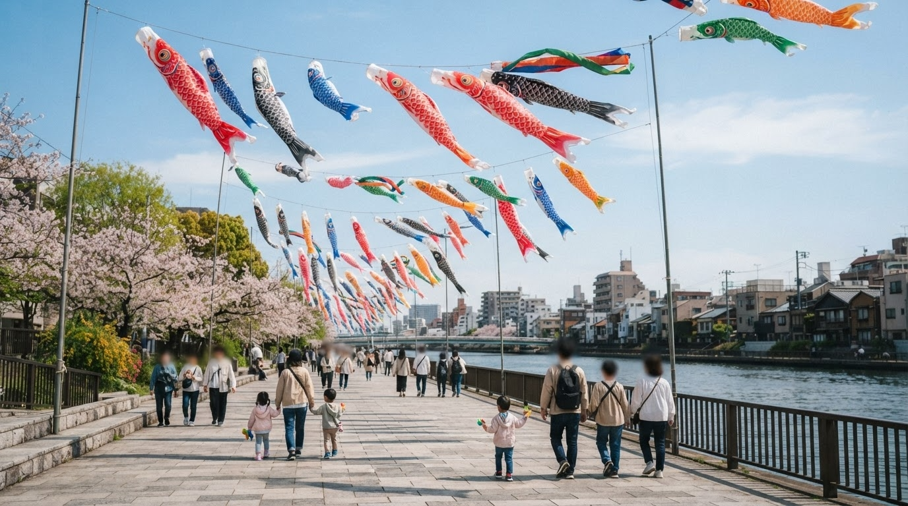
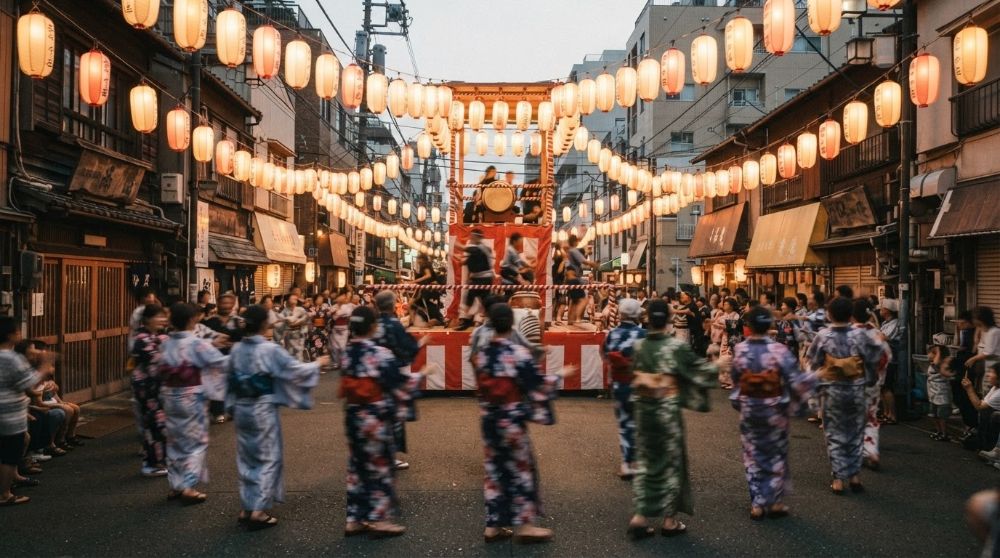
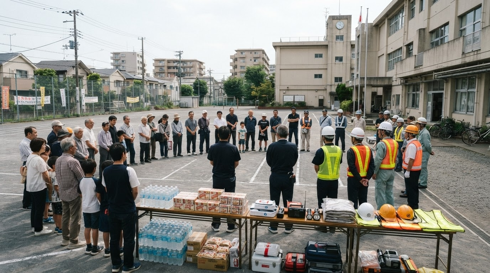

2026.07.25
交通規制
隅田川花火大会に伴う交通規制があります。お出かけの際はご注意ください。
行事・交通規制・防災情報など、柳橋町会からのお知らせです。
柳橋町会は、隅田川と神田川に囲まれた、台東区最南端の町会です。
台東区公式情報では、柳橋町会は約2,200世帯を数える大きな町会として紹介されています。 近年はマンションも増え、昔からの住民と新しい住民がともに暮らすまちです。
東に隅田川、南に神田川。柳橋は、江戸の水運や船宿文化と深く結びついた歴史ある地域です。
防災訓練、防犯活動、資源回収、行事、子ども・シニア交流などを通じて、 安心して暮らせるまちづくりを進めています。
世代を超えて交流できる、柳橋らしい行事を開催しています。

隅田川テラスにこいのぼりが泳ぐ、柳橋町会を代表する春の行事です。

地域の皆さんで踊り、語らい、夏の夜を楽しむ恒例行事です。

災害や火災に備え、地域で助け合うための訓練や見守り活動を行います。
いざという時のために、家族で確認しておきましょう。
浅草中学校
東京都台東区蔵前1丁目3番4号
上野公園一帯
延焼火災などの危険がある場合の避難場所です。